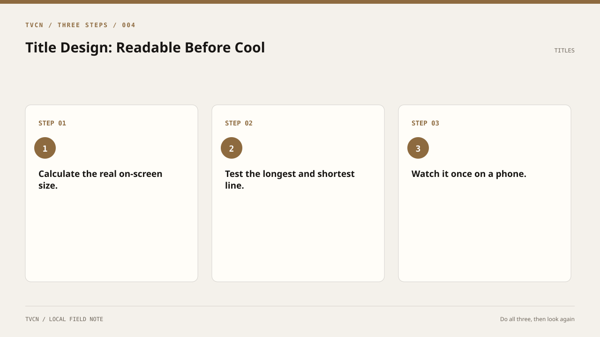

A title explains first, then attracts
A good title tells the right viewer in half a second what the film is and what it does for them. Write one “content title” and one “hook title,” then merge. Do not start with trending words.
Every promise in the title must be paid in the film. A mismatch costs not only this view but the next trust.
Limits
Do not replace content with bait. Exaggeration is allowed; lying is not. Swap “shocking” for a concrete result; clicks may drop, completion rises.
On set
Set the title in lines of two or three characters and test the longest line at phone width. Start with white on black; add style only after it reads.
Three-step flow

Do this
Title design starts with legibility, then style. If the audience cannot read the title, the design failed.
- Keep two or three characters per line and measure the longest line at phone width.
- Start with white type on black; add font, texture, and motion only after it reads.
- Watch it on a phone without zooming and confirm it stays inside the safe area.
Avoid
Do not pair a thin typeface with a busy background; unreadable is failed.
Image note. Covers, diagrams and step images on this page are editorial illustrations or structure diagrams, not photographs of a test performed here; they are not evidence of measured gear performance. Where an image is AI-assisted, the caption says so. Read the test conditions in the text before treating an image as proof.